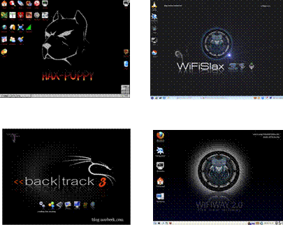
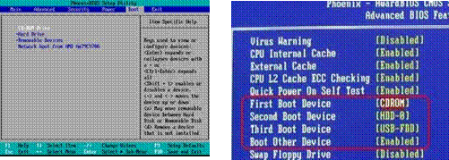
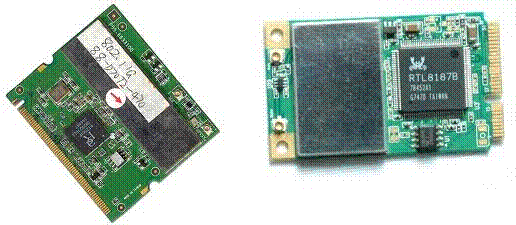
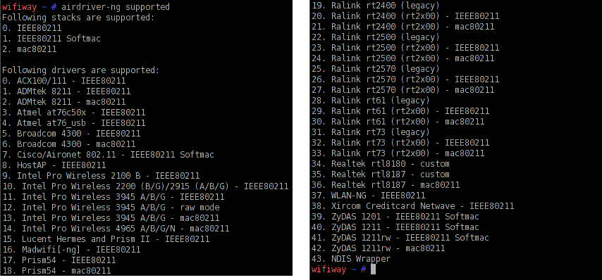
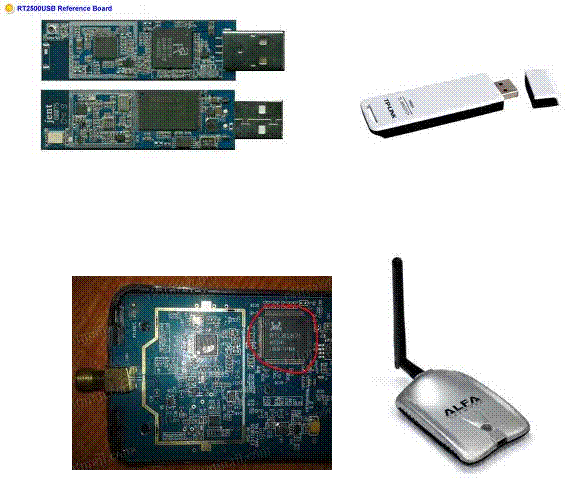

Para auditar una red wifi necesitamos el siguiente material
 1º Un sistema
operativo que nos permita auditar.
1º Un sistema
operativo que nos permita auditar.

Se podría realizar con Windows pero tendríamos muchas limitaciones y seria el peor sistema operativo para auditar.Por lo que tenemos que recurrir a un sistema operativo basado en Linux, existen multitud de ellos y todos disponen de una versión live lo que nos simplifica su utilización.
Podríamos utilizar desde los mas antiguos como Auditor, WHAX ó Hax-Puppy, pero los mas modernos van introduciendo nuevas y mejores utilidades para auditar el potente wifislax o el back/track pero el mas potente y mas actual hoy en día para redes inalambricas es wifiway 2.0, es el que mas utilidades y drivers actualizados trae de todos, ya que es el mas moderno de todos ellos ademas esta preparado para poder incorporarle nuevos modulos .
 2º Para poder
utilizar estos sistemas operativos el único requisito es configurar el ordenador para que nos arranque desde el CD.
2º Para poder
utilizar estos sistemas operativos el único requisito es configurar el ordenador para que nos arranque desde el CD.
Para poder configurar la bios, a pesar de que cada ordenador es distinto, la mayoría de ellos se entra en la bios pulsando la tecla F2 ó los más antiguos pulsando la tecla Supr, al

encender el ordenador.También los menús de las bios son distintos, pero donde debemos entrar es donde ponga “Avance BIOS Feuture” en los más antiguos ó en la pestaña Boot en los más modernos. Debemos dejarlos configurados como muestran las imágenes es decir:
Primer sitio de arranque CDROM
Segundo sitio de arranque HDD-0 ó Hard Drive


3º Disponer de un adaptador wifi que sea reconocido para auditar, por el sistema operativo que vayamos a utilizar, gran parte de los que vienen en los ordenadores portátiles son validos, como los de las fotos de la derecha pero si no es valido el de nuestro portátil también se puede recurrir a adaptadores externos bien por USB ó por tarjeta PCMCIA, en los ordenadores de sobremesa se puede poner una tarjeta interna PCI .Hay multitud de adaptadores con distintos formatos y precios pero lo importante es el chip que llevan en su interior, ya que dependiendo que chip tenga nos vale ó por el contrario no vale. Los chips que valen para auditar con wifiway son los de la siguiente lista:
 |
Si tenemos que recurrir a un adaptador externo lo mas normal es elegir por puerto USB ya que son mas versatiles que el resto. Lo mas importante es no

fijarnos en su aspecto exterior ya que con el mismo formato el chip que lleva interno puede ser distinto ya que el fabricante pone en la pegatina de la parte posterior en unos versión 2.5 y en otros versión 2.8 y exteriormente son idénticos pero internamente son diferentes.Una cosa importante a la hora de elegir un adaptador es la posibilidad de conectarle una antena externa ya que gran parte de la ganancia de un aparato emisor-receptor como son estos viene dada por el tipo de antena que se utilice.
Uno de los mejores adaptadores USB que existe para auditar es sin duda la alfa 1000 por el chip que lleva el RTL8187L y con una potencia de 1 watio mientras que la mayoría tienen 0,075 watio ó 0,1 watio, algunos llegan hasta los 0,4 watios, también existe la alfa en versiones de 0,5 watios y 0,8 watios que son validas, pero la versión de 2 watios hoy en día no es valida por llevar un chip el RTL3070 que todavía no esta reconocido por wifiway.
La alfa 1000 como lleva antena externa de 5db por defecto la podemos cambiar por otro tipo de antena para mejorar su señal.
 4º Una vez que
dispongamos del sistema operativo grabado en un CD, el ordenador configurado
para que arranque desde el CDROM y dispongamos de un adaptador wifi adecuado ya
solo nos queda conseguir los conocimientos adecuados para poder movernos por
las distintas utilidades que traen los sistemas operativos para poder auditar
las redes inalámbricas.
4º Una vez que
dispongamos del sistema operativo grabado en un CD, el ordenador configurado
para que arranque desde el CDROM y dispongamos de un adaptador wifi adecuado ya
solo nos queda conseguir los conocimientos adecuados para poder movernos por
las distintas utilidades que traen los sistemas operativos para poder auditar
las redes inalámbricas.